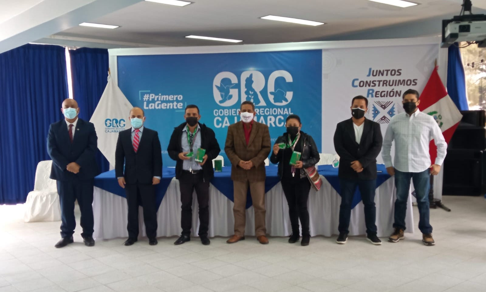

Blog
GOBIERNO REGIONAL DE CAJAMARCA EN ALIANZA CON AGROS CREAN EL PRIMER PADRÓN AGRARIO DIGITAL REGIONAL

El Gobierno Regional de Cajamarca en alianza con la empresa tecnológica Agros crean el primer Padrón Agrario Digital de la región, con el objetivo de conectar a los productores de café de Cajamarca con programas de ayuda del gobierno, compradores socialmente responsables y proveedores de servicios globales.
Entre los beneficios que obtendrán los caficultores de Cajamarca|, estarán acceder a préstamos digitales, seguros agrícolas basados en imágenes satelitales, comercio electrónico, trámites digitales, telemedicina, entre otros.
Según Robinson López, CEO de Agros, la propuesta permite que los productores de café se conecten con la economía digital del mundo, a través de una billetera digital de identidad para usuarios no digitales, empleando la voz como interfaz de control, haciendo posible que un agricultor con celular analógico pueda tener una identidad digital.
“Ahora los caficultores de Cajamarca podrán demostrar su solvencia y trayectoria con tan sólo mostrar su tarjeta física o realizar una simple llamada a una central gratuita. Como nietos e hijos de agricultores, conocemos la exclusión social y financiera que genera los sobre costos heredados de la desconfianza e informalidad, por lo que decidimos usar el poder de la tecnología y los negocios para cambiar esta realidad”, acotó.
Por otro lado, para Hugo Piñarreta, Fundador & COO de Agros, se necesita que más instituciones se sumen a iniciativas como éstas que fortalezcan e impulsen el importante trabajo que realizan nuestros héroes de la alimentación.
“Uno es un número muy pequeño para hacer grandes cosas, por ello invitamos a más instituciones, ONG’s, cooperativas y empresas a sumarse a esta iniciativa para impulsar juntos el desarrollo sostenible de la agricultura familiar, no sólo en Cajamarca, sino a nivel nacional y mundial”, agregó.
Asimismo, debe resaltarse el trabajo realizado por el Ing. Mesías Guevara Amasifuén Gobernador Regional de Cajamarca, quien viene impulsando de manera decidida la digitalización e innovación en todos los sectores productivos, esto permitirá seguir avanzando hacia una agricultura más productiva, competitiva, generadora de empleo y sostenible.
Actualmente a nivel nacional se cultivan 425,400 hectáreas de café, siendo Cajamarca una de las 7 regiones que concentran el 91% del total de productores, de acuerdo a cifras del Ministerio de Desarrollo Agrario y Riego (Midagri).